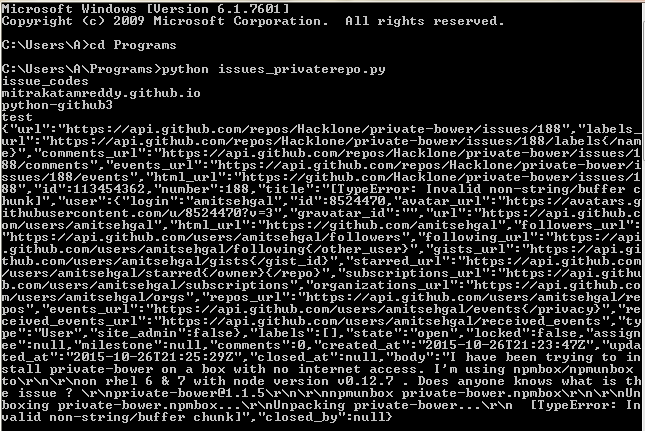

Token Generation using OAUTH
The python code is written for OAUTH token genertaion and the link for the code https://github.com/mitrakatamreddy/issue_codes/blob/master/tk_oauth.py. The output for the code will be a string of TOKEN.
Generation of issues_list on cURL
The issues_list is generated on cURL using command curl -i https://api.github.com/repos/username/reponame/issues?'access_token'='OAUTH-TOKEN'
The output on cURL
skatamre@e03609:~/git$ curl -i https://api.github.com/repos/Hacklone/private-bower/issues/189?'access_token'='c625a175df66662ec300f1d4b30ce3864a992cbf' HTTP/1.1 200 OK Server: GitHub.com Date: Tue, 27 Oct 2015 15:39:37 GMT Content-Type: application/json; charset=utf-8 Content-Length: 3040 Status: 200 OK X-RateLimit-Limit: 5000 X-RateLimit-Remaining: 4983 X-RateLimit-Reset: 1445960838 Cache-Control: private, max-age=60, s-maxage=60 Last-Modified: Tue, 27 Oct 2015 06:32:02 GMT ETag: "c9082828d2f6b81ba11ea69fe6715aa8" X-OAuth-Scopes: repo, user X-Accepted-OAuth-Scopes: Vary: Accept, Authorization, Cookie, X-GitHub-OTP X-GitHub-Media-Type: github.v3 X-XSS-Protection: 1; mode=block X-Frame-Options: deny Content-Security-Policy: default-src 'none' Access-Control-Allow-Credentials: true Access-Control-Expose-Headers: ETag, Link, X-GitHub-OTP, X-RateLimit-Limit, X-RateLimit-Remaining, X-RateLimit-Reset, X-OAuth-Scopes, X-Accepted-OAuth-Scopes, X-Poll-Interval Access-Control-Allow-Origin: * Strict-Transport-Security: max-age=31536000; includeSubdomains; preload X-Content-Type-Options: nosniff Vary: Accept-Encoding X-Served-By: 7f48e2f7761567e923121f17538d7a6d X-GitHub-Request-Id: 81AE7CE2:7FC1:44C3261:562F9AB9 { "url": "https://api.github.com/repos/Hacklone/private-bower/issues/189", "labels_url": "https://api.github.com/repos/Hacklone/private-bower/issues/189/labels{/name}", "comments_url": "https://api.github.com/repos/Hacklone/private-bower/issues/189/comments", "events_url": "https://api.github.com/repos/Hacklone/private-bower/issues/189/events", "html_url": "https://github.com/Hacklone/private-bower/pull/189", "id": 113516780, "number": 189, "title": "Feature/#66 base site url", "user": { "login": "royrico", "id": 8582535, "avatar_url": "https://avatars.githubusercontent.com/u/8582535?v=3", "gravatar_id": "", "url": "https://api.github.com/users/royrico", "html_url": "https://github.com/royrico", "followers_url": "https://api.github.com/users/royrico/followers", "following_url": "https://api.github.com/users/royrico/following{/other_user}", "gists_url": "https://api.github.com/users/royrico/gists{/gist_id}", "starred_url": "https://api.github.com/users/royrico/starred{/owner}{/repo}", "subscriptions_url": "https://api.github.com/users/royrico/subscriptions", "organizations_url": "https://api.github.com/users/royrico/orgs", "repos_url": "https://api.github.com/users/royrico/repos", "events_url": "https://api.github.com/users/royrico/events{/privacy}", "received_events_url": "https://api.github.com/users/royrico/received_events", "type": "User", "site_admin": false }, "labels": [ ], "state": "open", "locked": false, "assignee": null, "milestone": null, "comments": 0, "created_at": "2015-10-27T06:32:02Z", "updated_at": "2015-10-27T06:32:02Z", "closed_at": null, "pull_request": { "url": "https://api.github.com/repos/Hacklone/private-bower/pulls/189", "html_url": "https://github.com/Hacklone/private-bower/pull/189", "diff_url": "https://github.com/Hacklone/private-bower/pull/189.diff", "patch_url": "https://github.com/Hacklone/private-bower/pull/189.patch" }, "body": "Hi, I've worked to implement the ability to load private-bower on a \"siteBaseURL\", enabling the site to be moved to a sub directory. This helps with hosting the site on a shared internal server or hosting behind a reverse proxy.\r\n\r\nFor the configuration file, I moved port and hostName options, under a group, called server. This is where added the config for siteBaseURL. This groups everything logically together. I also ensured that, if people still had the port & hostName on the root, it would pick it up there, so that it would not break anyone's existing configuration.\r\n\r\nif the siteBaseURL is defined, private-bower will add one additional route, which is to redirect / to the specified URL. So that people can still type in localhost:port when testing.\r\n\r\nAlso, fixed some inconsistencies with the 'default' heroku registry urls in the default config, and in the configurationManager. Both are now the same, and use secure protocol.\r\n\r\nThanks!\r\n", "closed_by": null } skatamre@e03609:~/git$
Generatinbg issues_list using request module on python
The issues are listed by th python code. The link for the code is https://github.com/mitrakatamreddy/issue_codes/blob/master/issues_privaterepo.py
The output for the code
